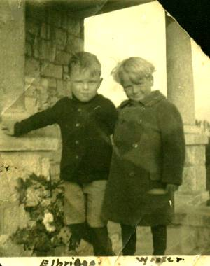
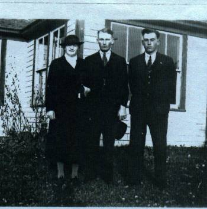
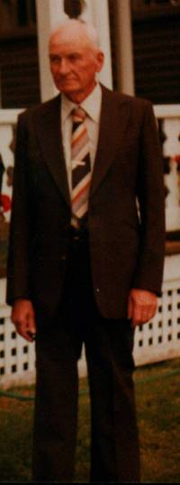

The Family Chronicle
No.41 May 10, 2003
__________
Walter Jubal Glendenning (September 29, 1913- June 16, 1998)
Walter was the second child, the first son, of Elmer and Jane (Watling) Glendenning. Mother came back to New Brunswick for his birth and may have stayed in NB until late 1916 – we do not know for sure.

Elbridge Watling and Walter Glendenning - Undated
The family returned permanently to Little Branch in 1919 and it is likely that is where Walter started school. My recollection is that Walter went to Grade 6, maybe Grade 7 and then worked with Dad on the farm. Walter did not talk much about his early years but I know that he worked long and hard both summer and winter. Because Dad was such a worker and Walter was the oldest boy in the family, I am sure that a great deal was expected of him.
He had a team of dogs, Chowder and Pup, which he hitched to a sled in winter and traveled around the community, and cross to visit Alex Newton. Once he took Dad across to George Adams’ to use the phone. The longest trip, Walter said, was to John W. MacNaughton’s – a distance of about 7 miles. After having his tonsils removed, he stayed a few days with Aunt Tine in Loggieville.
He would visit and stay with family in Canobie, one time traveling back with Uncle Frank and Uncle Chip. Canobie cousins often came to visit Little Branch and once a number of them tented by the Little Branch School. Walter used to play basketball at the Black River Hall. I remember one summer Walter replaced bearings on the old Model A under an apple tree in the front yard. Dad allowed $2.00 per week for gas for the Model A. If you needed more, you waited until the following week.
One Sunday morning, Mum dressed Walter and then turned to getting the others ready for church. Walter wandered out to the side of the barn where a number of small chicks were being kept in a half puncheon. To entertain himself, Walter picked up a number of chickens and wrung their necks and then dropped them on the ground. Perhaps he had seen Dad wring the necks of chickens before taking the feathers off.
As a young man, everything was done by hand or with horses. Once Walter and John took a load of hay to Hardwicke and returned with a load of smelts. The temperature was minus 36 F with blowing and drifting snow. On another occasion, Walter took a wagonload of two-foot furnace wood to Chatham but the lady would not accept it; he came back to Loggieville and sold it there for $4.50. He also took furnace wood by sled under the Branch Bridge and Victoria Bridge, around Point Aux Carr, around Point Cheval and on to Loggieville. On another occasion, Walter and Dad were bringing a load of wood from the Ridge (a hardwood rise at the back of the farm) when the wagon rack broke. They brought the horses to the barn, had supper and then returned to fix the wagon by lantern-light. One winter, Walter worked for the Fowlies lumbering the Malcolm Mac Naughton place.
Walter married Elspeth Agnes Gibson; they went to the same church and courted for 11 years before being married. They were married at the Presbyterian Manse in Boom Road by Rev. P. McK. Sampson on November 1, 1939 and had four children, Stephen Walter, Elizabeth Ann (1944-1954), Lillian and Carla.

Mum, Walter and John at the Branch
Walter made a number of trips to Boston, both by train and by car, and once he and Brydone Weeks drove together. (Brydone was courting Lillian)
One Christmas, 1938 I believe, Walter was taking family members to Chatham in the Model A. The right front window was broken and was replaced with a piece of cardboard. Seems to me that Mum, Ken, Norm, Lillian and I were in the car. As we neared the railroad tracks, Walter spotted a train approaching from the right. He tried to stop but the car kept sliding towards the tracks. Quick thinking, he tramped on the gas instead and got across just ahead of the train. People on the back of Adams’ truck just ahead of us were sure that we were going to be hit.
Walter began building a home on the Dan MacLean place in 1937 and moved into it on November 1, 1940. In the meantime, they lived at Little Branch. The basement was dug with the aid of a horse, Jess, and a scoop and most if not all of the lumber came from Hallidays. The original barn on the property burned in 1932, the same year as the Black River Hall. His house was struck by lightning in 1940 but did not burn.
Although Walter farmed, he also worked off the farm. In 1940 he worked at clearing the bombing range along the Loggieville Road. He was called to the Army Service Corps during the war and was stationed at Ottawa, Halifax, Debert and Camp Borden. On his return, he continued to farm and to work at the airport. In 1950 he commenced work with Modern Construction Co. Ltd. In 1959 he moved to Moncton and continued to work for Modern at job sites throughout New Brunswick including their head office in Moncton. He retired in 1978.
Dad was one of the promoters of farmers working together and was Secretary Treasurer of the Agricultural Society #103. Part of the role was to maintain a “store” from which seeds, etc. would be sold. After Dad died, Walter took over the role and moved the shed from the Branch to his place.
Walter and Agnes always welcomed visitors – family and friends alike - and they were good hosts. A meal seemed to appear effortlessly and Walter encouraged visitors to “eat up and give the house a good name.” He liked to travel and visit family and friends in Bathurst, Rexton, Harvey Station and down to the Boston area. He also traveled widely stopping to see men he had worked with. For a while they owned a cottage in the Caissie Cape area.
Walter is also remembered for his keen memory. He seemed to remember anyone he ever worked with, perhaps even met, and would visit if he was passing nearby. He enjoyed reminiscing but talked little about what himself.
After moving to PEI, I dropped in on Walter and Agnes practically every time I passed through Moncton. Often I arrived early and had lunch. While he was interested in current events, since I was obsessed with genealogy, most of our conversations revolved around family events and members of our extended family.
Walter loved to visit the old home, “The Branch.” A few years ago, when he was not able to drive, I arranged to pick him up for a day’s outing. When we got into the car I said, “ We can go any where you would like. Would you like to go to the Island? Saint John? Fredericton? Springhill? Or where?” He hesitated only for a moment then said, “I think that I’d like to go to the Branch”. So we drove up, ate a sandwich at the Escuminac wharf, visited “The Branch” and returned to Moncton.

Walter taken in 1983
The Chronicle is an occasional newsletter published by Don Glendenning It is intended to solicit and provide information about family tree matters. Comments, enquiries and information may be sent to 62 Queen Elizabeth Drive, Charlottetown, PEI, C1A 3A9. Tel: 902-892-5859 Email: dglende @attglobal.net. Feel free to make and pass along copies of this newsletter.